4.2. The Configuration File¶
Configuration files are used to control analysis settings for dpp-msbayes and msBayes. PyMsBayes allows you to use dpp-msbayes and msBayes configuration files (and their respective models) interchangeably. Here is an example of a configuration file for dpp-msbayes:
concentrationShape = 1000.0
concentrationScale = 0.00437
thetaShape = 4.0
thetaScale = 0.001
ancestralThetaShape = 0
ancestralThetaScale = 0
thetaParameters = 000
tauShape = 1.0
tauScale = 0.02
timeInSubsPerSite = 1
bottleProportionShapeA = 0
bottleProportionShapeB = 0
bottleProportionShared = 0
migrationShape = 0
migrationScale = 0
numTauClasses = 0
BEGIN SAMPLE_TBL
species-1 locus-1 1.0 1.0 10 8 32.42 389 0.27 0.24 0.26 species-1-locus-1.fasta
species-1 locus-2 1.0 1.0 8 6 5.51 500 0.25 0.22 0.24 species-1-locus-2.fasta
species-1 locus-3 1.0 1.0 6 8 8.38 524 0.26 0.23 0.26 species-1-locus-3.fasta
species-1 locus-4 1.0 1.0 8 10 5.20 345 0.25 0.23 0.24 species-1-locus-4.fasta
species-1 locus-5 1.0 1.0 8 8 29.59 417 0.27 0.23 0.21 species-1-locus-5.fasta
species-1 mito-1 0.25 4.0 5 5 8.15 600 0.22 0.24 0.27 species-1-mito-1.fasta
species-2 locus-1 1.0 1.0 6 10 7.53 400 0.25 0.24 0.26 species-2-locus-1.fasta
species-2 locus-3 1.0 1.0 10 8 11.14 550 0.27 0.22 0.24 species-2-locus-3.fasta
species-2 locus-4 1.0 1.0 8 8 9.39 350 0.24 0.24 0.23 species-2-locus-4.fasta
species-2 locus-5 1.0 1.0 10 10 13.32 450 0.26 0.24 0.22 species-2-locus-5.fasta
species-2 mito-1 0.25 4.0 4 5 7.59 549 0.23 0.26 0.23 species-2-mito-1.fasta
species-3 locus-1 1.0 1.0 10 6 17.03 367 0.25 0.23 0.27 species-3-locus-1.fasta
species-3 locus-3 1.0 1.0 8 10 59.17 541 0.26 0.22 0.25 species-3-locus-3.fasta
species-3 locus-4 1.0 1.0 6 8 6.90 333 0.28 0.23 0.21 species-3-locus-4.fasta
species-3 mito-1 0.25 4.0 5 4 11.42 587 0.22 0.22 0.25 species-3-mito-1.fasta
END SAMPLE_TBL
A configuration file has two parts:
- The preamble containing keyword arguments for specifying prior probability distributions of model parameters.
- The sample_table containing information and parameter values for each sequence alignment. This section is delimited by the BEGIN SAMPLE_TBL and END SAMPLE_TBL lines.
4.2.1. The Preamble¶
There are two main differences to the preamble between PyMsBayes and msBayes.
The dpp-msbayes preamble gives you more (and different) options to control the number of parameters in the model and the priors on those parameters.
The msBayes- and dpp-msbayes-style preambles are processed differently in PyMsBayes: The keywords in the preamble are case insensitive, and if any unrecognized keywords are encountered, an error is reported and the process exits (i.e., crashes).
In msBayes, the keywords are case-sensitive and, more importantly, the the default value for a setting is quietly used when any options are mis-typed. For example, if you specify uppertheta = 0.01 in an msBayes config file (note the lower case “t”), it will quietly use the default setting for upperTheta and not report any warning or error. So, if you prefer the model implemented in msBayes, PyMsBayes is useful as a “safer” interface for it.
Below we walk through all of the options for the dpp-msbayes preamble. If you want to use the msBayes model with PyMsBayes, please see the msBayes documentation for information about the preamble.
Preamble Elements
- concentrationShape / concentrationScale
- thetaParameters
- thetaShape / thetaScale
- ancestralThetaShape / ancestralThetaScale
- tauShape / tauScale
- timeInSubsPerSite
- bottleProportionShapeA / bottleProportionShapeB
- bottleProportionShared
- migrationShape / migrationScale
- recombinationShape / recombinationScale
- numTauClasses
4.2.1.1. concentrationShape / concentrationScale¶
The shape and scale parameters of a gamma-distributed prior on the concentration parameter of the Dirichlet-process prior on divergence models.
See the “Dirichlet-process prior on divergence models” section for more information on the Dirichlet process and the concentration parameter that controls it.
4.2.1.2. thetaParameters¶
dpp-msbayes gives you full control over the parameterization of the population sizes for each pair of populations. We will refer to the sizes of the ancestral and two descendant populations as 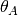, 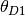, and 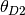.
This setting is controlled by a sequence of three integers that always starts with 0 and increments by 1 whenever a free parameter is added. The first, second, and third integers represent , , and , respectively.
000 is one extreme, where , , and are all constrained to be equal for each population pair (population sizes will still vary among pairs).
012 is the other extreme, where , , and are all estimated as independent parameters for each pair of populations. This is most similar to the original msBayes. However, the descendant population sizes are not constrained to be negatively correlated, as they are in msBayes (see [8] and [10]).
Another example is 001: the descendant populations share the same size parameter, but the ancestral population size is free to vary.
For 011 and 010, one of the descendant population is constrained to the same size as the ancestral, and the other is free to vary.
4.2.1.3. thetaShape / thetaScale¶
These settings define the shape and scale parameters of a gamma prior on the
effective population sizes. Population sizes are scaled by the per-site
mutation rate ( ):
):  .
.
4.2.1.4. ancestralThetaShape / ancestralThetaScale¶
If these settings are both provided, and are both positive, they define the shape and scale parameters of a gamma prior on the effective population size of the ancestral population of each pair of populations.
If they are excluded, or both are zero, the thetaShape / thetaScale settings are used for the gamma prior on ancestral population sizes (i.e., all population size parameters have the same prior).
Note
If you specify a setting such as 000 for the thetaParameters option, the ancestral population size is constrained to be the same as the descendant populations, and thus the ancestralThetaShape / ancestralThetaScale options will be overridden and have no affect.
4.2.1.5. tauShape / tauScale¶
These settings define the shape and scale parameters of a gamma prior on divergence times. See the timeInSubsPerSite setting for the information on the time units.
4.2.1.6. timeInSubsPerSite¶
This setting controls the time scale of the model and has two settings:
timeInSubsPerSite = 1: Time units are in expected substitutions per site. For example, a divergence of 0.05 means that, on average, 5% of sites have changed since the populations diverged (so you expect 10% divergence between the populations since the population divergence). Thus, you can convert these units to the number of generations or years by dividing by the mutation rate.
timeInSubsPerSite = 0: Time units are in coalescent units,
 generations, where 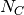 is the
size of a constant reference population based on the mean of the prior on
theta (defined by the thetaShape / thetaScale settings ).
generations, where 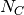 is the
size of a constant reference population based on the mean of the prior on
theta (defined by the thetaShape / thetaScale settings ).If we use 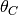 to represent the mean of the theta prior, then
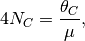
where
 is the per-site mutation rate. Thus, you can
convert these “ generations” units to the number of
generations by assuming a mutation rate and multiplying by
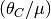. See [8] for more
details.
is the per-site mutation rate. Thus, you can
convert these “ generations” units to the number of
generations by assuming a mutation rate and multiplying by
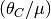. See [8] for more
details.PyMsBayes supports the use of the timeInSubsPerSite option for msBayes configuration files as well.
Note
Why use the mean of the prior on theta to scale time? I have no idea. This is legacy from msBayes, and is the default setting. However, I strongly discourage using this time scale, because it makes it very difficult to compare results across analyses with different settings for the theta_prior. It also requires you to re-scale the divergence_time_prior every time you change the theta_prior. Having time in units of expected substitutions per site is much more straight forward (i.e., timeInSubsPerSite = 1).
4.2.1.7. bottleProportionShapeA / bottleProportionShapeB¶
If both are positive, these settings define a beta prior on the magnitude of a post-divergence bottleneck in each of the descendant populations. bottleProportionShapeA and bottleProportionShapeB correspond to the shape parameters alpha and beta, respectively, of the beta prior.
The bottleneck magnitude is the proportion of the effective population size that remains during the bottleneck. For example, a value of 0.95 would mean that bottleneck reduces the effective population size by 5%.
If either or both are zero or less, there is no post-divergence population bottleneck in the descendant populations (i.e., the bottleneck-magnitude parameters, along with the timing of each bottleneck, are removed from the model).
Note
There are also parameters in the model for the timing of the end of the
bottleneck (it begins at speciation in forward time). There is one of these
parameters for each pair of populations (i.e., the descendant populations
of each pair share the same bottleneck-end-time parameter).
Thus if either or both of the bottleProportionShapeA / bottleProportionShapeB settings are zero or
less, you are also removing these bottleneck timing parameters from the
model.
This means you are removing 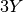 parameters from the model,
where “ ” is the number of pairs of populations.
” is the number of pairs of populations.
4.2.1.9. migrationShape / migrationScale¶
These settings define the shape and scale parameters of a gamma prior on the symmetric migration between the descendant populations of each pair (in units of the number of gene copies per generation).
If either or both settings are zero or less, there is no migration in the model.
4.2.1.10. recombinationShape / recombinationScale¶
These settings define the shape and scale parameters of a gamma prior on the intragenic recombination rate.
If either or both are zero or less, there is no recombination in the model.
Note
I recommend not including intragenic recombination in the model, because the current implementation is very inefficient and poorly tested.
4.2.1.11. numTauClasses¶
If this setting is zero (the default), the number of divergence events is free to vary according to the Dirichlet process prior on divergence models.
If it is greater than zero, then the model is constrained to numTauClasses divergence events. This is useful for simulation-based power analyses, but should not be used for empirical analyses.
4.2.2. The Sample Table¶
Delimited by the BEGIN SAMPLE_TBL and END SAMPLE_TBL lines is the sample table section of our example configuration file above. This is a tab-delimited table where each column represents information or parameter values for each row, which represents a locus for a particular taxon (i.e., each row will correspond to a sequence alignment we wish to include in our analysis).
Sample Table Columns
- Column 1—Taxon label
- A unique label must be used to identify each pair of populations in the analysis.
- Column 2—Locus label
- A unique label must be used to identify each locus in the analysis.
- Column 3—Ploidy and/or generation-time multiplier
- The number in this column is used to scale for differences in ploidy among loci or for differences in generation-times among taxa. In our example configuration file 1.0 is used for loci from a diploid nuclear genome, whereas 0.25 is used for a region of the mitochondrial genome (because its haploid and maternally inherited). However, if a taxon “species-3” had 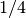 the generation times of the other two taxa, we would specify “1.0” for the third column for its mitochondrial locus, and “4.0” for the third column for its nuclear loci.
- Column 4—Mutation-rate multiplier
- The number in this column is used to scale for differences in mutation rates among taxa and/or loci. In our example configuration file, we are assuming that the mitochondrial locus (“mito-1”) is evolving four-times faster than the other loci (hence, the “4.0” in this fourth column for the three rows representing the mitochondrial locus).
- Columns 5 and 6—Number of gene copies from Populations 1 and 2
- For example, for “locus-1” of “species-1” in our example configuration file, we have “10” and “8” in Columns 5 and 6. Thus, the first 10 sequences in the “species-1-locus-1.fasta” file specified in Column 12 must be from one population, and the last 8 sequences must be from the other population. NOTE, which population is “1” or “2” is completely arbitrary. However, the numbers in Columns 5 and 6 must correspond to the first and last sequences, respectively, in the sequence file specified in Column 12.
- Column 7—The transition/transversion rate ratio
- This is the transition/transversion rate ratio (“Kappa”) of the HKY85 model of nucleotide substitution [4] for this alignment. NOTE: This is the transition/transversion rate ratio, not the “count” ratio. I.e., Kappa = 1 is equal to the Jukes-Cantor model.
- Column 8—The length of the alignment
- The number of columns in the alignment specified in Column 12.
- Columns 9, 10, and 11—Base frequencies
- Equilibrium frequencies of nucleotide bases A, C, and G, respectively. The frequency of T is simply 1 minus the sum of these three columns.
- Column 12—Path to sequence alignment
- The path to the fasta-formatted file containing the aligned sequences. The first sequences in the file should correspond to Column 5, and the last sequences in the file should correspond to Column 6. If only the name of the file is given (as in the example configuration file above), the file must be in the same directory (“folder”) as the configuration file. The paths can be relative (e.g., ../alignments/species-1-locus-1.fasta).